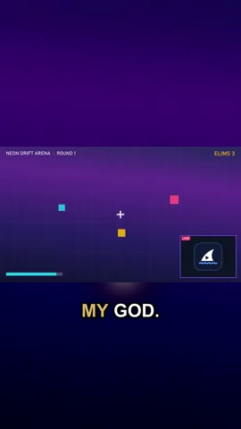

Kickkel is működikés Twitch-csel, YouTube-bal vagy bármilyen videófájllal
Bemegy a streamed, kijönnek a posztolásra kész klipek.
A SharkyClips megtalálja a stream felvételed legjobb pillanatait, és függőleges klipeket készít belőlük YouTube Shortsra, TikTokra és Instagram Reelsre. Minden a saját gépeden fut.
- 100%-ban ingyenes
- Nincs vízjel
- Nincs korlát
- A saját gépeden fut
Valódi eredmények
Minden pár egy pillanatot mutat a hosszú streamből, és ugyanazt a pillanatot a klipben, amit a SharkyClips magától készített belőle: vágva, 9:16-ra alakítva, felirattal és címmel.
 Stream · 4:39
Stream · 4:39 Kész klip
Kész klipOne grenade, triple kill! What did I see? 🤯Hangos reakció, chatrobbanás (14-szer több üzenet) és a "what the hell" miatt választotta. Pontszám: 93.  Stream · 1:11
Stream · 1:11 Kész klip
Kész klipOne versus three? I pulled off a CLUTCH! 😱1 a 3 ellen fordítás: hangos hang, 12-szer gyorsabb chat, "no way" és "clutch". Pontszám: 78.  Stream · 5:28
Stream · 5:28 Kész klip
Kész klipDid that last throw really just win the game?A győzelem pillanata: rövid csend, aztán kiabálás és "let's go". Pontszám: 85.  Stream · 0:21
Stream · 0:21
Kész klipDid you really see that double elimination happen?Dupla kiütés: "oh my god", hangos reakció és 11-szer gyorsabb chat. Pontszám: 82.  Stream · 2:53
Stream · 2:53 Kész klip
Kész klipZero armor, reckless run, barely alive! 😱Pánikszerű menekülés a boss elől. A káromkodás ki van sípolva és a feliratban is el van rejtve. Pontszám: 64.  Stream · 3:51
Stream · 3:51 Kész klip
Kész klipPracticed all week, then finally landed itEgész héten gyakorolt ugrás: "yes!" és "LETS GOOO" a chatben. Pontszám: 75.
A demó streamünkből készült (egy rajzolt játék, gépi hang és generált chat), így nem látszik valódi személy, játék vagy csatorna. Kézzel semmit sem szerkesztettünk.
Hogyan működik
Három lépés. A vágást közben a SharkyClips végzi.
Add hozzá a streamed
Húzz be egy videófájlt, vagy illessz be egy Twitch-, YouTube- vagy Kick-linket. A SharkyClips az OBS-mappád legújabb felvételét is fel tudja venni.
A SharkyClips elkészíti a klipeket
Megtalálja a hangos, vicces és izgalmas pillanatokat, tisztán vágja őket, feliratot tesz rájuk, kisípolja a káromkodást és megírja a címeket.
Ellenőrizd és oszd meg
Nézd meg a klipeket, változtass, amit akarsz, és oszd meg őket YouTube Shortson, TikTokon és Instagram Reelsen.


Streamereknek készült
Megtalálja a pillanatokat
Hangos reakciókból, nevetésből, chatrobbanásokból és játékbeli eseményekből egy sorba rendezett kliplista lesz.
Sípolás, ellenőrizve
A káromkodást 11 nyelven kisípolja, és minden kész klipet újra meghallgat.
Egy Megosztás gomb
YouTube Shorts, TikTok és Instagram Reels, mindegyikhez a megfelelő szöveggel és korlátokkal.
TikTok-segédÚj
Egy kis böngészőbővítmény az Edge-hez, a Chrome-hoz, az Operához és a Brave-hez kitölti a TikTok-feltöltésedet. Te ellenőrzöd, és te kattintasz a Közzétételre.
Fotó-diavetítésÚj
2-20 fotóból függőleges előtte-utána videó lesz feliratokkal és zenével.
Témák és színekÚj
Négy színtéma az apphoz (Klasszikus, Óceán, Shark Sign, Nagy kontraszt), sötéten vagy világosan, és a saját kiemelőszíned.
A SharkyClips és a többiek
Adatok az egyes termékek hivatalos weboldaláról, ellenőrizve: 2026. november 28.. Az árak amerikai dollárban, adó nélkül. A csomagok változnak, ezért döntés előtt nézd meg az oldalaikat.
| Jellemző | SharkyClips | Eklipse | OpusClip | StreamLadder |
|---|---|---|---|---|
| Ár | Ingyenes (nyílt forráskód, MIT-licenc) | Ingyenes próba; Premium havi 24,99 $-tól vagy évi 179,99 $-tól | Ingyenes csomag; fizetős csomagok havi 15 $-tól | Ingyenes csomag; fizetős csomagok havi 15 $-tól vagy évi 150 $-tól |
| Vízjel | Soha | Az ingyenes exportokon | Az ingyenes csomagban | Csak ha egy ingyenes klip fizetős funkciót használ |
| Klipkorlát | Nincs | Ingyenes: egy friss stream klipjeinek előnézete; Premium: korlátlan MI-s klipkészítés | Ingyenes: havi 60 feldolgozási perc, a fájlokat 3 napig tárolják | Nincs perckorlát; egész streamek MI-s klipelése a Creator csomagtól (havi 27 $); ingyenes export 720p-ben |
| Hol dolgozzák fel a videódat | A saját gépeden: semmi sem töltődik fel | Online: az MI-s szerkesztésük a felhőben fut | Online: feltöltesz egy fájlt vagy beillesztesz egy linket | Online: feltöltesz egy fájlt vagy beillesztesz egy linket |
| Mi kell hozzá | Windows 10 vagy 11 rendszerű gép 8 GB RAM-mal (macOS: kevésbé tesztelt) | Böngésző és fiók | Böngésző és fiók | Böngésző és fiók |
| Játékfelismerés | A Delta Force és a League of Legends játékképernyőjét olvassa; más játékoknál a hang, a beszéd és a chat alapján | Több mint 3000 játék, minden játékkategóriára hangolva | Nincs feltüntetve | Nincs feltüntetve |
| Kick | Kick-videók a chatjükkel | Kick-streameket importál | Támogatja a Kick-linkeket | Kick-klipek az ingyenes csomagban; egész Kick-streamek a Creator csomagtól |
| Káromkodások kisípolása | Automatikus 11 nyelven, és minden klipet újra ellenőriz | Nincs feltüntetve | A Pro csomagtól (havi 29 $) | Automatikus szócenzúra (a csomag nincs egyértelműen feltüntetve) |
| Nyelvek | 11 (app, beszédfelismerés és felirat) | Feliratokhoz nincs feltüntetve; hangutasítások angolul | Több mint 25 a feliratokhoz | Több mint 90 a feliratokhoz |
A „Nincs feltüntetve” azt jelenti, hogy nem találtuk a hivatalos oldalaikon. Valami hibás vagy elavult? Írj nekünk a kapcsolat oldalon, és javítjuk.
Források (14 hivatalos oldal)
- eklipse.gg
- eklipse.gg/help/how-much-does-eklipse-premium-cost
- eklipse.gg/help/what-are-the-main-differences-between-the-free-and-premium-plans
- eklipse.gg/help/will-my-exported-video-have-a-watermark
- eklipse.gg/help/import-kick-streams-to-eklipse
- eklipse.gg/features/ai-edit
- opus.pro/pricing
- help.opus.pro/docs/article/plans-and-credits.md
- help.opus.pro/docs/article/video-sources-supported.md
- help.opus.pro/docs/article/video-languages-supported.md
- streamladder.com/pricing
- streamladder.com/clipgpt/import-from-kick
- streamladder.com/clip-editor/word-censoring
- streamladder.com/clip-editor/captions
Hogyan használja a SharkyClips a YouTube-ot
A YouTube csatlakoztatása nem kötelező. Ha csatlakoztatod, a SharkyClips a hivatalos YouTube API-szolgáltatásokat csak arra használja, hogy feltöltse és kezelje az általad választott klipeket, és megmutassa az eredményeiket. A YouTube-adataid a gépeden maradnak.
Az engedélyek és a YouTube-adatok használatának megjelenítése
A YouTube-ra feltöltés nem kötelező. Ha a Beállítások → YouTube alatt összekapcsolod a csatornádat, a SharkyClips a hivatalos YouTube API-szolgáltatásokat pontosan ezekre használja, és csak akkor, ha te kéred:
| Művelet | Engedély (scope) | Mikor |
|---|---|---|
| Egy általad előkészített klip feltöltése (cím, leírás, címkék, láthatóság, közzététel ideje, lejátszási lista, bélyegkép); adatainak vagy idejének módosítása, korábbi közzététele vagy törlése, ha nyilvánossá válás előtt lemondod; a csatlakoztatott csatorna megjelenítése; a SharkyClipsszel feltöltött videók megtekintéseinek, kedveléseinek és láthatóságának olvasása | youtube | Amikor megnyomod a Közzététel most gombot vagy ütemezel egy klipet (előre feltöltve, amíg a géped be van kapcsolva), a Könyvtárban szerkeszted vagy lemondod, megnyitod a Beállításokat, és nagyjából 6 óránként, amíg az app fut |
| Ugyanezen videók átlagos megtekintési arányának olvasása, hogy kiderüljön, melyik kezdés (hook) tartja meg a nézőket | yt-analytics.readonly | Csak hook-teszt részeként feltöltött klipeknél, miután 48 órája nyilvánosak |
Ezek az adatok csak a te gépeden tárolódnak, és csak arra szolgálnak, hogy megmutassák az eredményeidet és javítsák a klipek pontszámát a te csatornádra. A SharkyClipsnek nincs szervere: a fejlesztők soha nem kapják meg, nem látják és nem osztják meg a YouTube-adataidat, és semmit nem használnak hirdetésre. A SharkyClips soha nem olvassa mások csatornáit, a hozzászólásaidat, a feliratkozóidat vagy az előzményeidet. Csak a SharkyClipsszel feltöltött videókat módosítja vagy törli, és csak akkor, ha kéred (például ha szerkesztesz vagy lemondasz egy ütemezett klipet).
A kapcsolatot bármikor bonthatod a Beállítások → YouTube alatt (ez visszavonja a hozzáférési tokent a Google-nál), vagy eltávolíthatod a hozzáférést a Google-fiókod engedélyei között. A csatlakozással elfogadod a YouTube Általános Szerződési Feltételeit; a Google az adataidat a Google Adatvédelmi irányelvei szerint kezeli. Olvasd el a teljes adatvédelmi szabályzatunkat és a felhasználási feltételeket.
Ingyenes, nyílt, privát
A SharkyClips MIT-licences: nincs előfizetés, nincs kredit, nincs vízjel. Nincs fiók és nincs követés, a videóid pedig a gépeden maradnak, hacsak meg nem osztod őket. A forráskód és minden verzió a GitHubon van.